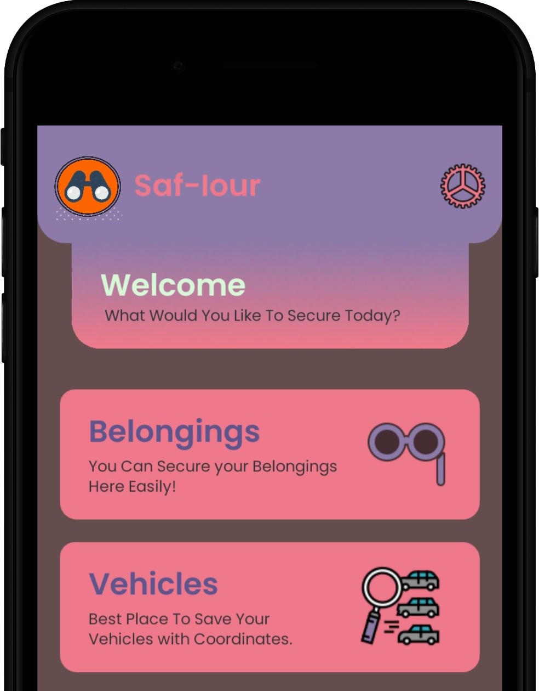

Saf-Iour
This is an application that lets user save Item and Vehicle
Location. User can create an account and save the data on the
cloud. It can also save current coordinates and navigate back
to them using Google Maps.
This app is available on Google Play Store and as a Standalone Website.

Notomatic
Notomatic is a note sharing website. This is designed for
universal use. Any school or college can take the basic
structure and add in their own notes. Students can also add in
their own notes by filling a form. These forms would be shared
to the their respective heads who further on would work upon
checking the quality and worthiness of these notes.
Notomatic Link Notomatic GitHub
Notomatic Link Notomatic GitHub
Tarloic
This is my portfolio website. I made it as a free time project.
Here you can explore a collection of my work and immerse
yourself in the world of creativity and innovation. This website
serves as a showcase of my skills, expertise, and passion for
Web Development. I started working on this to improve my Web
Development skills.
Tarloic Home Tarloic GitHub
Tarloic Home Tarloic GitHub
Recruitment Portal
Created a Recruitment Portal for the college club Next Gen AI.
It is made using Django, HTML, CSS and JS. It has cloud storage
support using PostgreSQL. It has features such as Admin Panel,
User Panel, and User Registration. It also has a feature of
exporting all the input data to a CSV file. It uses Neon Tech as
the Online Database.
Recruitment Portal Link Recruitment Portal GitHub
Recruitment Portal Link Recruitment Portal GitHub
Retro Revive
Retro Revive, aims to enhance the visual experience by
leveraging machine learning to colorize grayscale images and
videos, bringing them to life with vibrant hues and tones. It
works on videos and photots.
Working Demo Link Retro Revive GitHub
Working Demo Link Retro Revive GitHub
Adval Studio Portfolio
Developed a comprehensive portfolio website for Adval Studio
utilizing ReactJS and CSS. The website showcases robust
animations and smooth transitions, providing an engaging and
dynamic user experience.
Adval Portfolio Link Adval Portfolio GitHub
Adval Portfolio Link Adval Portfolio GitHub
AD Life
This website, built with HTML, CSS, and JS, was developed for an
NGO. It includes features such as donation options, volunteer
registration, information on their activities, and details about
the education they provide. The site also showcases images from
the NGO.
AD Life Link AD Life GitHub
AD Life Link AD Life GitHub
Alumni Nexus
This project works as Alumni Management System and has
Postgresql and Cloud Database Support. It is made using Django
and HTML, CSS, JS. It has features such as Alumni Registration
and allows user to check data of other Alumni.
Alumni Nexus Link Alumni Nexus GitHub
Alumni Nexus Link Alumni Nexus GitHub
Safest Path
This website uses criminal dataset and finds the route with
lower crime rates. Seamlessly integrating with maps, it guides
users along secure paths, minimizing risks and ensuring a
worry-free commute. It adds in features such as Walk Mode.
Safest Path Link Safest Path GitHub
Safest Path Link Safest Path GitHub
Chikitsak AI
This Django-based website serves as a platform to assess medical
issues, providing information on both the problem and the
corresponding medicine along with its conditions. Drawing from a
dataset, it delivers results for various health concerns.
Chikitsak AI Link Chikitsak AI GitHub
Chikitsak AI Link Chikitsak AI GitHub